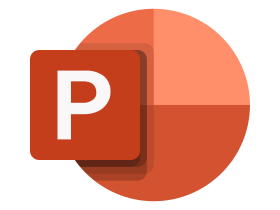

Contexte et objectifs du projet
SNCF Gares & Connexions, une société Anonyme, filiale à 100 % de SNCF Réseau, SNCF Gares & Connexions est au service des transporteurs de tous modes, des collectivités et des voyageurs.
Accueillir chaque jour 10 millions de voyageurs, visiteurs et riverains, appelle un engagement fort pour améliorer la qualité de l’exploitation, imaginer de nouveaux services et moderniser le patrimoine.
La SA a un seul objectif : satisfaire ses clients et leur donner envie de prendre l'un des 15 000 trains au départ chaque jour.Cette entreprise nous à sélectionner 5 cas d'usages, auxquelles nous allons essayer d'y répondre par groupe mixte (inter parcours) dans un délai de 1 jour et demi.
Cas d'usage
Les sujet sont attribués aléatoirement, mon groupe et moi avons eu le cas d'usage n°2.
Sujet
DÉTECTION DES GRANDS ÉVÉNEMENTS ENTRAINANT UNE AFFLUENCE EN GARE INHABITUELLE
Le défi
Comment détecter les jours d'affluence atypiques et les affecter à un événement connu ?
Le Contexte
- De nombreuses personnes peuvent faire le choix de se déplacer en train afin de se rendre à des grands événements, tels que des manifestations sportives, concerts ou festivals en tout genre. Ces grands événements peuvent être synonymes d'une affluence qui n'est pas habituelle par rapport à une affluence "standard", voir hors norme pour certains événements (ex JO 2024). Ces phénomènes d'affluence sont souvent anticipés localement, permettant de pouvoir adapter la gare en conséquence. Mais aucun outil ne permet ni de pouvoir avoir une vision globale de ces phénomènes, ni de pouvoir aider à les anticiper sur le terrain.
- Comment aider les agents à détecter qu'une affluence est atypique sur un jour ou une période en particulier? Et comment savoir quel événement l'a déclenché?
Pour qui ?
La Direction Marketing Clients et Technologies de Gares & Connexions, spécifiquement pour des usages Dir Marketing, et Direction Expérience Client.
Les données
- Fréquentation journalière : Angers Saint-Laud, Guingamp, Nantes, Rennes, Saint-Brieuc, Vannes en 2022 et 2023
- Historique de fonctionnement des capteurs sur ces gares
- Base événements
Le résultat attendu
Imaginer un outil data (modèle + dataviz) pour que Gares & Connexions soit en capacité de pouvoir identifier et expliquer des périodes d'affluence atypiques passées. Et pourquoi pas être en capacité de pouvoir prédire l'affluence sur des événements futurs ?
Les équipes sont tirées aléatoirement entre les deux parcours (EMS : Exploration et Modélisation Statistique et VCOD : Visualisation et Conception d'Outils Décisionnels) ainsi que le cas d'usage. Mon équipe est composé de Peter BROUSSAUD, Bastien COADIC, Quentin EVENO, Grégoire GEFFRAULT, Henri POUPARD, Eliott VAUDELET et moi même.
Pour aider à la bonne réalisation de ce projet, nous avions plusieurs poyens qui ont été mis à disposition :
- Canaux Teams → un canal par équipe et un canal commun
- Salle Informatique → pas deux fois le même cas d'usage dans une même salle
- Équipe d'accompagnants par équipes → sponsor (aide sur les spécificités des données), mentor (aide technique et data) et facilitateur : aide sur l’organisation du datathon
- Matériel d'expert → support de cours et exemples de code
Les sponsors : répond aux questions sur les données et nous aident sur la finalité de nos cas d'usage. (membre de SNCF Gares & Connexions)
Les mentors : répond aux questions techniques et algorithmiques et nous aident sur la mise en place de nos cas d'usage. (Membre de Orange Business)
Les facilitateurs : répond aux questions sur l'organisation et nous aident sur le planning, l'organisation,... (Enseignants de l'IUT)
Les livrables attendus
- Notebook (Python)
- Tableau de bord (Power BI)
- Support de présentation (Power Point)
Nos résultats
 Télécharger notre traiment de données (sous jupyter en .ipynb)
Télécharger notre traiment de données (sous jupyter en .ipynb)
 Télécharger l'outil rendu (Power BI)
Télécharger l'outil rendu (Power BI)
Télécharger la présentation POWER POINT
Vous pouvez également télécharger directement l'ensemble du dossier (attention, le Power BI et le script jupyter ne peuvent être éxécuté (les données ne seront pas fournies) :
Les difficultés rencontrées
Une des principale difficulté à été de collaborer avec de nouvelles personnes, il a donc été un peu dur au début de donc de bien se comprendre et avoir le courage de partager ses idées.
Après avoir trouver notre organisation de groupe, nous n'avons pas vraiment rencontrées de difficultés. Si ce n'est que le temps qui était très court.
Les apprentissages
Nous avons appris à collaborer avec de nouvelles personnes, cela nous a donc appris à :
- mieux travailler en équipe
- mieux communiquer → faire entendre ses idées et être à l'écoute des idées des autres
Nous avons également appris à travailler dans un temps imparti sur une vrai demande. Il y avait également une équipe de ouest France afin de faire un reportage sur ce datathon, voici un extrait et la photo de mon groupe publié (image cliquable vers le lien de l'article).